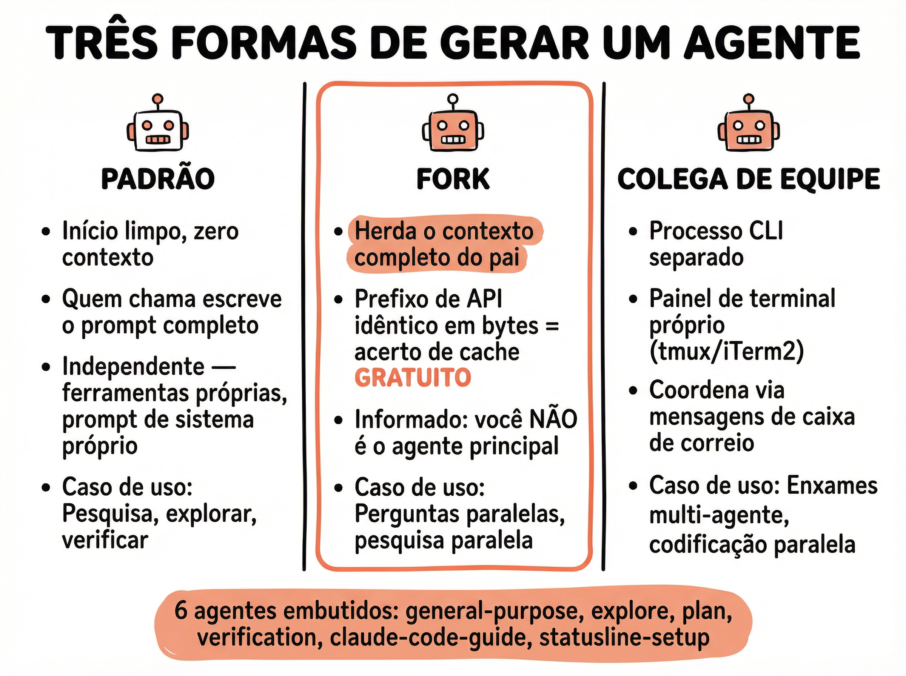
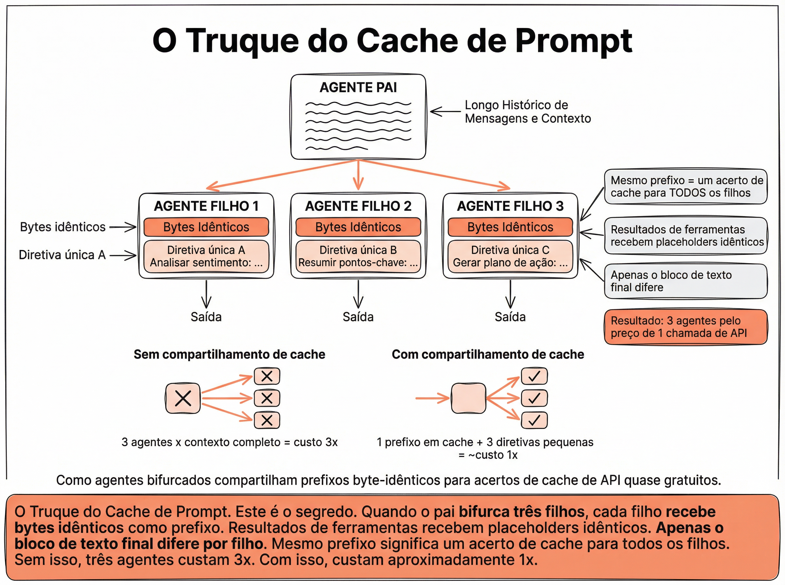

🔄 Standard Mode — Agente novo com zero contexto
O modo Standard cria um agente completamente independente. Ele não herda nada do pai — nem contexto, nem conversa, nem memória de sessão. Você escreve o prompt completo do zero, e ele executa sozinho. É o modo ideal para pesquisa e exploração, quando você quer um agente que comece limpo.

Como Funciona o Standard Mode
Zero contexto herdado — o agente nasce vazio, sem saber nada da conversa do pai
Prompt completo fornecido por você — você define exatamente o que o agente deve fazer
Independência total — não compartilha cache, tokens ou estado com outros agentes
Ideal para exploração — quando você quer investigar algo sem poluir o contexto principal
💡 Quando Usar Standard
Use Standard quando a tarefa é autocontida e não depende do que você já conversou. Exemplos: "pesquise como funciona X na codebase", "analise este arquivo isoladamente", "gere testes para esta função". O custo é maior porque não há cache compartilhado, mas a independência compensa quando você precisa de resultados limpos.
🔀 Fork Mode — Filho que herda todo o contexto do pai
O Fork Mode é onde a mágica acontece. O agente filho recebe uma cópia exata de toda a conversa do pai. Como o prefixo de bytes é idêntico, o cache da API é compartilhado automaticamente — tornando múltiplos forks quase gratuitos em termos de custo.
Como Funciona o Fork Mode
Herança total de contexto — o filho recebe a conversa inteira do pai, byte a byte
Prefixo idêntico em bytes — como os bytes iniciais são iguais, a API reconhece o cache e não cobra novamente
Cache compartilhado — múltiplos forks do mesmo pai pagam apenas pelos tokens novos (a divergência)
Ideal para perguntas paralelas — faça 5 perguntas diferentes sobre o mesmo contexto simultaneamente
📊 Economia Real do Fork
Sem fork: 3 perguntas separadas = 3x o custo total (cada uma paga o contexto inteiro)
Com fork: 3 forks do mesmo pai = ~1.1x o custo (prefixo cacheado, paga só a divergência)
Economia cresce com o contexto: quanto maior a conversa do pai, maior o benefÃcio do cache
Latência menor: tokens cacheados são processados mais rapidamente pela API
👥 Teammate Mode — Processo separado com poder total
O Teammate Mode é o mais poderoso e o mais pesado. Ele cria um processo Claude Code completamente separado em um painel tmux ou iTerm2. Isolamento total, acesso total a ferramentas, sem limitações de subagente. É como ter outro desenvolvedor ao seu lado.
Como Funciona o Teammate Mode
Processo separado — roda em painel tmux ou tab iTerm2, independente do processo pai
Isolamento total — memória, contexto e estado completamente separados
Poder total — acessa todas as ferramentas sem restrições de subagente
Ideal para enxames — múltiplos teammates trabalhando em partes diferentes do projeto simultaneamente
💡 Teammate na Prática
Use Teammate quando você precisa de um agente que possa fazer tudo — inclusive criar subagentes próprios, gerenciar arquivos complexos ou executar sequências longas de comandos. O custo é o mais alto dos três modos (sem cache compartilhado e overhead de processo), mas a capacidade compensa para tarefas que exigem autonomia total. Configure tmux com painéis nomeados para acompanhar cada teammate.
💰 O Truque do Cache — O molho secreto dos agentes paralelos
O cache de prompt é o que torna o Fork Mode economicamente viável. Sem ele, criar 5 agentes paralelos custaria 5x. Com ele, custa pouco mais que 1x. Entender como o cache funciona é a diferença entre gastar $50/dia e $15/dia fazendo o mesmo trabalho.

Como o Cache Funciona
Prefixo idêntico em bytes — a API da Anthropic cacheia por prefixo exato de bytes na requisição
Fork herda byte a byte — como o contexto do filho é cópia exata do pai, o prefixo bate perfeitamente
Tokens cacheados custam 90% menos — a API cobra uma fração para tokens que já foram processados
Cache tem TTL de 5 minutos — forks precisam ser criados dentro dessa janela para aproveitar o cache
📊 Números Reais de Custo
Sem cache: 3 agentes Standard fazendo perguntas similares = 3x custo total do contexto
Com cache (Fork): 3 forks do mesmo pai = ~1x custo (prefixo cacheado em todos)
Economia por fork adicional: cada novo fork paga apenas pelos tokens que divergem do pai
Latência reduzida: tokens cacheados são servidos mais rapidamente, acelerando o tempo de resposta
🎯 Escolhendo o Modo — Quando usar cada tipo de agente
Cada modo de agente resolve um problema diferente. Escolher errado significa pagar mais por menos, ou ter menos capacidade do que precisa. Use esta tabela como referência rápida para decisões do dia a dia.
Guia de Decisão Rápida
Standard para exploração — tarefa autocontida, não depende do contexto atual, pesquisa independente
Fork para paralelo barato — múltiplas perguntas sobre o mesmo contexto, economia de custo via cache
Teammate para enxames — tarefas que exigem autonomia total, acesso irrestrito a ferramentas, longa duração
Regra de ouro: comece com Fork (mais barato), suba para Teammate apenas quando necessário
Fazer
- ✓ Usar Fork para perguntas paralelas sobre o mesmo contexto
- ✓ Criar forks dentro da janela de 5 minutos do cache
- ✓ Usar Standard quando o contexto do pai é irrelevante
- ✓ Reservar Teammate para tarefas que exigem autonomia total
Evitar
- ✗ Usar Standard quando Fork seria mais barato para o mesmo resultado
- ✗ Criar Teammate para tarefas simples que um Fork resolve
- ✗ Esperar mais de 5 minutos entre forks (cache expira)
- ✗ Criar dezenas de teammates simultâneos sem necessidade real
⚡ AsyncLocalStorage — Isolamento de contexto para agentes in-process
Enquanto Standard, Fork e Teammate criam processos separados, o Claude Code também usa AsyncLocalStorage internamente para isolar contexto entre agentes que rodam dentro do mesmo processo. É leve, sem overhead de criação de processo, e garante que cada agente tenha seu próprio estado.
Como Funciona o AsyncLocalStorage
Isolamento in-process — cada agente tem seu próprio "escopo" de variáveis dentro do mesmo processo Node/Bun
Sem overhead de processo — não cria processos novos, usa o event loop existente
Propagação automática — o contexto segue automaticamente através de callbacks e Promises
API nativa do Node.js — usa async_hooks.AsyncLocalStorage para manter estado por chain assÃncrona
💡 Por Que Isso Importa Para Você
O AsyncLocalStorage é o que permite ao Claude Code rodar subagentes sem criar processos pesados. Quando você usa a ferramenta Agent internamente, cada instância tem seu próprio contexto isolado — logs, estado de conversa e resultados de ferramentas não se misturam entre agentes. Isso significa que agentes in-process são rápidos de criar e destruir, tornando-os ideais para tarefas curtas e paralelas que não justificam o custo de um Fork ou Teammate.
📋 Resumo do Módulo
Próximo Módulo:
2.2 - ðŸ›¡ï¸ A Fortaleza